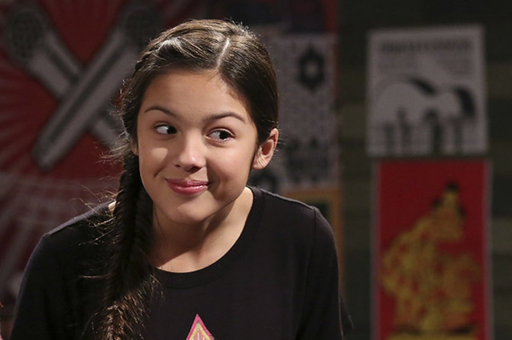

Olivia Rodrigo
A L B U M S
SOUR (2021)
- 1. brutal
- 2. traitor
- 3. drivers license
- 4. 1 step forward, 3 steps back
- 5. deja vu
- 6. good 4 u
- 7. enough for you
- 8. happier
- 9. jealousy, jealousy
- 10. favorite crime
- 11. hope ur ok
GUTS (2023)
- 1. all-american bitch
- 2. bad idea right?
- 3. vampire
- 4. lacy
- 5. ballad of a homeschooled girl
- 6. making the bed
- 7. logical
- 8. get him back!
- 9. love is embarrassing
- 10. the grudge
- 11. pretty isn't pretty
- 12. teenage dream
GUTS(spilled) (2024)
- 13. obsessed
- 14. girl i've always been
- 15. scared of my guitar
- 16. stranger
- 17. so american
C A R E E R
Before Fame

Olivia Rodrigo was born on February 20, 2003, in Murrieta, California. Her early career was significantly shaped by her involvement with Disney Channel, which provided her with a platform to develop her acting and musical talents.
At the age of 12, she secured the role of Paige Olvera in the Disney Channel series Bizaardvark (2016–2019), where she played a young guitarist and social media star (Wikipedia, 2024).
This role marked her television debut and introduced her to a broader audience. In 2019, she gained further recognition when she starred as Nini Salazar-Roberts in High School Musical: The Musical: The Series on Disney+, where she showcased her singing and songwriting skills (Britannica, 2024).
Breakthrough
Olivia Rodrigo's breakthrough in the music industry came with the release of her debut single, "Drivers License", on January 8, 2021.
The song broke Spotify's record for the most daily streams for a non-holiday song, with over 15.7 million global streams on January 11 and more than 17 million the following day (Wikipedia, 2024).
It also became the first song in history to surpass 80 million streams in seven days (Billboard, 2021).
Drivers License debuted at number one on the Billboard Hot 100 and topped charts in multiple countries (Rolling Stone, 2021).
Following this success, Rodrigo released her debut album, Sour, on May 21, 2021, which featured hits like "Good 4 U" and "Deja Vu".

Awards

Olivia Rodrigo has received 14 Grammy nominations and three wins, including Best New Artist, at just 21 years old (Grammy.com, 2025).
Rodrigo became the 19th artist to receive a BRIT Billion Award, showing her global impact. She has seven Billboard Music Awards, four MTV Video Music Awards, five iHeartRadio Music Awards, four People's Choice Awards, an American Music Award, a Brit Award, and a Juno Award (Wikipedia, 2025).
Tours
Olivia Rodrigo's touring career began with the Sour Tour (2022), which supported her debut album with theater performances.
She then launched the Guts World Tour (2024), her first arena tour, covering 102 shows worldwide with supporting acts like The Breeders and PinkPantheress.
The tour was a commercial success, grossing $184.6 million and attracting 1.4 million attendees, making it the highest-grossing tour by an artist born in the 21st century.
Her Inglewood performances were recorded for a Netflix special (Wikipedia, 2024).